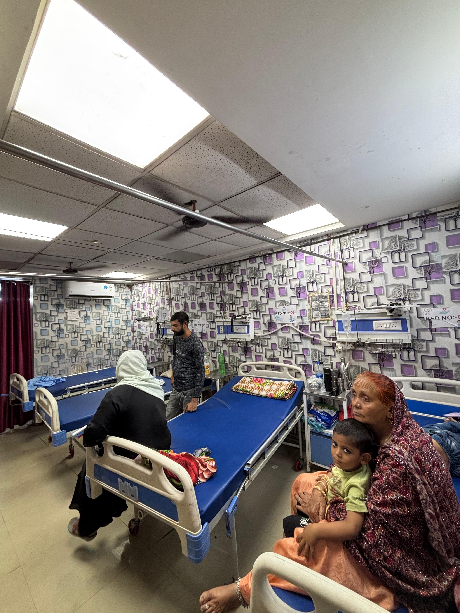

Heart Care You Can Trust
At Punjab Hospital, our Cardiology Department offers comprehensive cardiovascular care using the latest technologies and evidence-based practices. We specialize in diagnosing and treating a wide range of heart conditions with compassion and precision.
✔ ECG, ECHO, and TMT diagnostics
✔ Blood pressure & cholesterol management
✔ Cardiac arrest & arrhythmia treatment
✔ Post-surgery cardiac rehabilitation
✔ 24×7 emergency cardiac care
✔ Blood pressure & cholesterol management
✔ Cardiac arrest & arrhythmia treatment
✔ Post-surgery cardiac rehabilitation
✔ 24×7 emergency cardiac care

Conditions We Treat
- Hypertension and coronary artery disease
- Heart attack (myocardial infarction)
- Heart failure and congenital heart defects
- Arrhythmias and valve disorders
- Preventive cardiology and lifestyle management


Our team of expert cardiologists and skilled nurses ensure that every patient receives personalized attention and the highest standard of cardiac care.